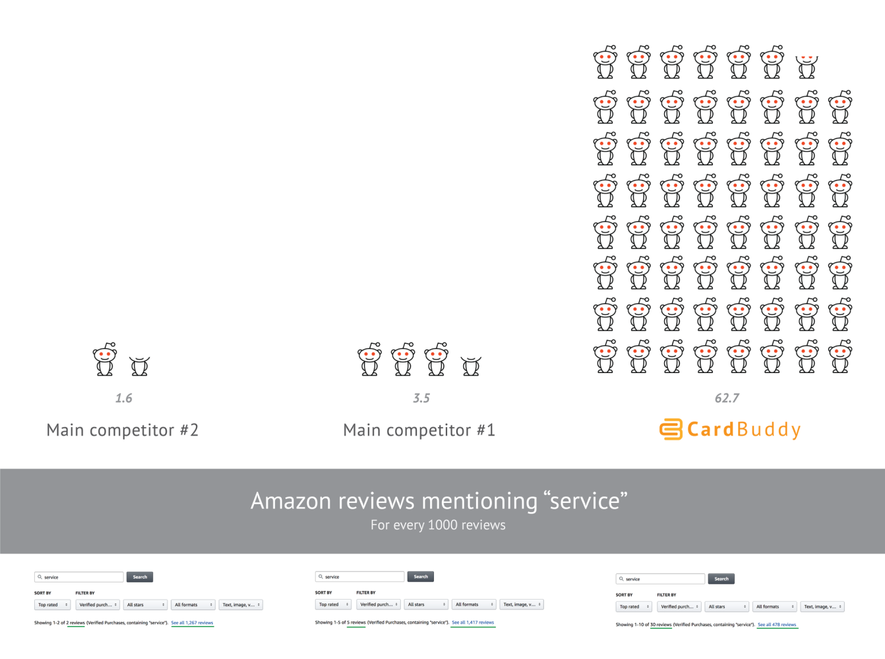

Most small brands try to outshout the giants… and lose their voice in the process. (Ouch.)
It’s tempting, right? Post more. Yell louder. Crank out content like your life depends on it. But let’s be real: that’s a fast track to burnout — not a breakthrough.
What if the goal isn’t to be louder... but sharper?
This is where Signalling Theory enters the chat. At its core, it’s based on a simple truth: information asymmetry — one side knows something the other doesn’t.
Signals are sent to bridge that gap. A cue. An action. A move that reveals quality or intent.
But not just any signal will work.
A signal must be:
- Credible (believable),
- Efficient (worth the cost of sending)
Minimal signals aim for that sweet spot.
Substantial enough to tip the scale, but light enough to remain agile.
Closing the Gap
Effective signalling isn’t about flooding feeds or blanketing airwaves. It’s about being intentional. It means making moves that feel right for where you are, and who you're trying to reach.
Minimal signalling leans into that idea.
It’s not about doing less to avoid the work — it’s about doing what works.
Choosing the kind of actions that mean something. The kind that linger long after.
This isn’t just me talking. There's a basis for this approach:
Connelly et al. (2011) found that the most effective signals strike a balance: they’re believable, but also efficient.
And Számadó (2011) makes an even bolder case. Not all honest signals have to be costly. Sometimes, the lightest gestures carry the deepest weight.
The Noise Problem
The instinct to "outshout" competitors...
Crank up ad spend, post endlessly, flood inboxes!
...made sense when volume equalled visibility.
Now? It backfires.
Audiences aren’t just tired. They’re tuned out.
It’s like nose blindness: the longer you're exposed to a strong scent, the less you notice it. Your brain tunes it out.
This is what overexposure looks like in real time.
Marketing noise works the same way. Overexposure dulls attention until even the loudest messages fade into the background.
Economist Herbert Simon warned us.
In an information-rich world, attention becomes the scarce resource.
Modern marketing often looks like sprinting on a treadmill that’s speeding up faster than your legs can move. More effort doesn’t always equal more traction. Just exhaustion.
If you’re a solo creator or small brand, the answer isn’t to run faster.
It’s to step off... and start signalling smarter.
Instead of shouting louder, the goal now is to change frequency:
- Sharpen your targeting: Speak to fewer people, but the ones who actually care.
- Shift your tone: Lower. More personal. More resonant.
- Prioritise emotional impact: Trade breadth for depth.
This isn’t just theory. Small players have already been winning this way.
Case in Point: CardBuddy
Let’s take a look at a small business that used minimal signals to powerful effect.
Sam Feldman, a college student at the University of Maryland at the time, launched CardBuddy — a brand selling stick-on phone wallets.
He had no investors, no marketing team, and no elaborate funnel.
Just an obsession with surprising and delighting customers in small, intentional ways.
In a Reddit post from 2017, Sam shared how he:
- Hand-signed over 12,000 thank-you notes in the early days — adding a human touch to every package
- Tucked $1 bills into 1 out of every 5 orders, creating a moment of unexpected joy for customers at just 20 cents per unit
- Replaced defective products generously, once sending a frustrated customer ten new wallets — including premium leather ones — just to turn a bad experience into a lasting impression
To measure the impact, Sam did a small study of his Amazon reviews. Where his top competitors had just around 2–4 mentions of the word “service” per 1,000 reviews… CardBuddy had closer to 63.

That kind of reputation wasn’t built through ad spend, but through small, consistent signals that meant something to the people receiving them.
These gestures helped Sam turn CardBuddy into a six-figure business while still in university, and earned him the title of Student Entrepreneur of the Year from the Dingman Center for Entrepreneurship in 2016.
Minimal signals. Maximum impact.
Nature’s Reminder: Lessons from the Shrewd Bird
In nature, when resources are plentiful and the stakes are low, extravagance tends to win — especially in the mating game:
- Louder calls.
- Brighter feathers.
- Longer dances.
But when space shrinks, noise becomes a liability.
The shrewd bird doesn’t scream louder. It adapts:
Placement over noise: It doesn’t waste energy calling into the void. It appears where attention already gathers — at watering holes, perches, clearings where a potential mate is likely to notice.
Offerings over boasting: It doesn’t just strut and shout. It brings a berry, a twig, a small but meaningful gesture— a sign of value, not vanity.
Subtlety over spectacle: While rivals exhaust themselves in flamboyant displays, it conserves energy and reads the room. A still tilt of the head. A soft wing flutter. A well-placed chirp at just the right moment.
I’m no ornithologist, to be clear (that's a bird expert by the way, saving you the trip to Google). More of a casual documentary watcher, really... but the illustration remains.
This strategy doesn’t promise overnight wins. But it increases the odds, while also conserving strength for the next hurdle.
Today’s marketplace mirrors that packed forest. Everyone’s shouting:
SALE!
NEW DROP!
LIMITED TIME ONLY!
But customers aren't listening like they used to.
The opportunity now lies in playing a different game.
Minimal signalling doesn’t mean doing less. It means showing up with clarity.
How You Can Start
You don’t need a big budget to put this into action.
Here are three moves you can make this week:
- Audit your presence: Look at your Instagram bio, WhatsApp Business page, or website. Are you signalling clarity or confusion? Instead of “Freelance MUA,” imagine: Bridal and Editorial Makeup | Kingston, Jamaica.
- Sharpen your focus: Define your brand’s emotional core. A small plant shop might centre around: "Making plant care simple and joyful for every home." Now align your content, tone, and offers to support that message.
- Act small, but smart: Pick one high-impact gesture this week. If you’re a jewellery maker, spotlight a loyal customer styling your piece. Take out your phone and film a video thanking them personally on your IG Story. It builds connection and community... far better than a boosted generic post ever could.
The cost of yelling will only keep rising. But thoughtful connection still works (and even compounds over time).
Final Thoughts: Building Signals That Matter
Exploring Signalling Theory in the context of brand-building has helped me realise something I’m still working on myself:
In a world drowning in noise, real connection is what lasts.
Sure, more content and bigger campaigns have their place. But realistically… can you really out-shout the giants?
Furthermore, it’s the minimal signals that actually reach people in a way that matters.
Honestly, though? I still have a looong way to go before I can confidently say I'm practicing what I'm preaching here.
But as a creator and marketer, this lesson has helped me to care less about omnipresence and more about, well... presence.
Since that shift, something’s changed.
The pressure’s lighter. Procrastination, in my personal branding efforts, is turning into progress. (I mean look at this article I just wrote!)
Not because I’m just doing more, but because I’m finally doing what matters.
P.S.
I want to acknowledge that this article was inspired in part by the article on the People Tutorials newsletter, Marketing Doesn’t Have to Be Loud by Dominic de Bourg.
If you found this perspective valuable, I highly encourage you to read his article as well. It offers even more practical, actionable insights on navigating marketing in today’s saturated space.
Alrighty then.
Until next time,
Velton
Want more essays like this?
Creator's Current is published on LinkedIn. Subscribe to get new issues in your feed.
This piece is part of Creator's Current, Velton Gooden Jr.'s ongoing series on creativity, digital presence, storytelling, and practical systems. Originally published on LinkedIn: View on LinkedIn